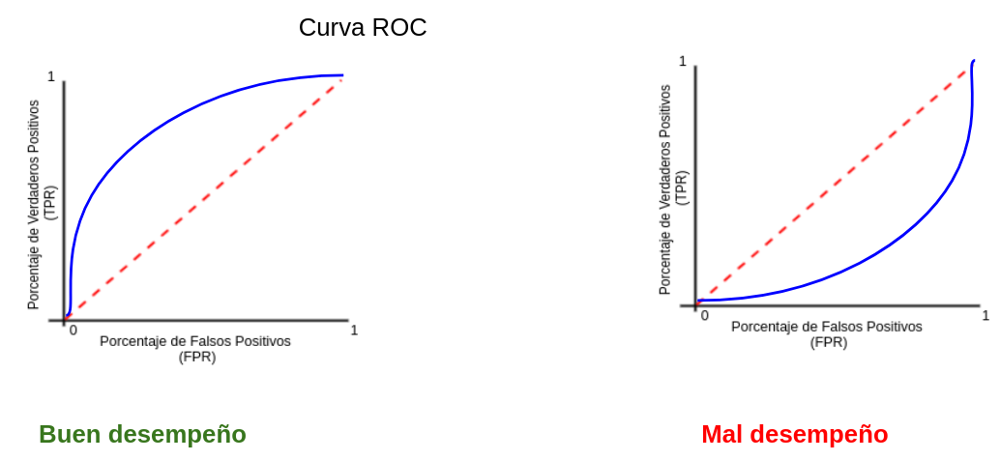

Capítulo 6 Regresión Logística
El nombre de este modelo es: Regresión Bernoulli con liga logit, pero todo mundo la conoce solo por regresión logística. Es importante saber que la liga puede ser elegida dentro de un conjunto de ligas comunes, por lo que puede dejar de ser logit y seguir siendo regresión Bernoulli, pero ya no podría ser llamada “logística”.
Al igual que en regresión lineal, existe la regresión simple y regresión múltiple. La regresión logística simple se utiliza una variable independiente, mientras que cuando se utiliza más de una variable independiente, el proceso se denomina regresión logística múltiple.
Objetivo: Estimar la probabilidad de pertenecer a la categoría positiva de una variable de respuesta categórica. Posteriormente, se determina el umbral de probabilidad a partir del cual se clasifica a una observación como positiva o negativa.
6.1 Función sigmoide
Si una variable cualitativa con dos categorías se codifica como 1 y 0, matemáticamente es posible ajustar un modelo de regresión lineal por mínimos cuadrados. El problema de esta aproximación es que, al tratarse de una recta, para valores extremos del predictor, se obtienen valores de \(Y\) menores que 0 o mayores que 1, lo que entra en contradicción con el hecho de que las probabilidades siempre están dentro del rango [0,1].
Para evitar estos problemas, la regresión logística transforma el valor devuelto por la regresión lineal empleando una función cuyo resultado está siempre comprendido entre 0 y 1. Existen varias funciones que cumplen esta descripción, una de las más utilizadas es la función logística (también conocida como función sigmoide):
\[\sigma(Z)=\frac{e^{Z}}{1+e^{Z}}\] Función sigmoide:
Para valores de \(Z\) muy grandes, el valor de \(e^{Z}\) tiende a infinito por lo que el valor de la función sigmoide es 1. Para valores de \(Z\) muy negativos, el valor \(e^{Z}\) tiende a cero, por lo que el valor de la función sigmoide es 0.
Sustituyendo la \(Z\) de la función sigmoide por la función lineal \(\beta_0+\beta_1X\) se obtiene que:
\[\pi=P(Y=k|X=x)=\frac{e^{\beta_0+\beta_1X}}{1+e^{\beta_0+\beta_1X}}\]
donde \(P(Y=k|X=x)\) puede interpretarse como: la probabilidad de que la variable cualitativa \(Y\) adquiera el valor \(k\), dado que el predictor \(X\) tiene el valor \(x\).
6.2 Ajuste del modelo
Esta función, puede ajustarse de forma sencilla con métodos de regresión lineal si se emplea su versión logarítmica:
\[logit(\pi)= ln(\frac{\pi}{1-\pi}) = ln(\frac{p(Y=k|X=x)}{1−p(Y=k|X=x)})=\beta_0+\beta_1X\]
\[P(Y=k|X=x)=\frac{e^{\beta_0+\beta_1x_1+\beta_2x_2+...+\beta_ix_i}}{1+e^{\beta_0+\beta_1x_1+\beta_2x_2+...+\beta_ix_i}}\]
La combinación óptima de coeficientes \(\beta_0\) y \(\beta_1\) será aquella que tenga la máxima verosimilitud (maximum likelihood), es decir el valor de los parámetros \(\beta_0\) y \(\beta_1\) con los que se maximiza la probabilidad de obtener los datos observados.
El método de maximum likelihood está ampliamente extendido en la estadística aunque su implementación no siempre es trivial.
Otra forma para ajustar un modelo de regresión logística es empleando descenso de gradiente. Si bien este no es el método de optimización más adecuado para resolver la regresión logística, está muy extendido en el ámbito de machine learning para ajustar otros modelos.
6.3 Clasificación
Una de las principales aplicaciones de un modelo de regresión logística es clasificar la variable cualitativa en función de valor que tome el predictor. Para conseguir esta clasificación, es necesario establecer un threshold de probabilidad a partir de la cual se considera que la variable pertenece a uno de los niveles. Por ejemplo, se puede asignar una observación al grupo 1 si \(p̂ (Y=1|X)>0.3\) y al grupo 0 si ocurre lo contrario.
Es importante mencionar que el punto de corte no necesariamente tiene que ser 0.5, este puede ser seleccionado a conveniencia de la métrica a optimizar.
6.4 Implementación en python
Ajustaremos un modelo de regresión logística usando la receta antes vista. El primer paso es cargar las librerías necesarias y los datos a explotar.
Lectura de datos
from sklearn.compose import ColumnTransformer
from sklearn.pipeline import Pipeline
from sklearn.preprocessing import StandardScaler, OneHotEncoder
from sklearn.model_selection import train_test_split
from sklearn.linear_model import LogisticRegression
import pandas as pd
from siuba import *
from plydata.one_table_verbs import pull
pd.set_option('display.max_columns', 4)
telco = pd.read_csv("data/Churn.csv")
telco.info()## <class 'pandas.core.frame.DataFrame'>
## RangeIndex: 7043 entries, 0 to 7042
## Data columns (total 21 columns):
## # Column Non-Null Count Dtype
## --- ------ -------------- -----
## 0 customerID 7043 non-null object
## 1 gender 7043 non-null object
## 2 SeniorCitizen 7043 non-null int64
## 3 Partner 7043 non-null object
## 4 Dependents 7043 non-null object
## 5 tenure 7043 non-null int64
## 6 PhoneService 7043 non-null object
## 7 MultipleLines 7043 non-null object
## 8 InternetService 7043 non-null object
## 9 OnlineSecurity 7043 non-null object
## 10 OnlineBackup 7043 non-null object
## 11 DeviceProtection 7043 non-null object
## 12 TechSupport 7043 non-null object
## 13 StreamingTV 7043 non-null object
## 14 StreamingMovies 7043 non-null object
## 15 Contract 7043 non-null object
## 16 PaperlessBilling 7043 non-null object
## 17 PaymentMethod 7043 non-null object
## 18 MonthlyCharges 7043 non-null float64
## 19 TotalCharges 7043 non-null object
## 20 Churn 7043 non-null object
## dtypes: float64(1), int64(2), object(18)
## memory usage: 1.1+ MBSe separa el conjunto de datos completo, comenzando por la variable de respuesta y los explicativos. Posteriormente, se crean los conjuntos de training & testing.
Segmentación de datos
telco_y = telco >> pull("Churn") # telco[["Churn"]]
telco_x = select(telco, -_.Churn, -_.customerID) # telco.drop('Churn', axis=1)
telco_x_train, telco_x_test, telco_y_train, telco_y_test = train_test_split(
telco_x, telco_y,
train_size = 0.80,
random_state = 195,
stratify = telco_y
)6.4.1 Pipeline de transformación de datos
La selección de variables y la ingeniería de características se lleva a cabo mediante el pipeline de transformación.
# pip install mlxtend==0.23.0
from mlxtend.feature_selection import ColumnSelector
# Seleccionamos las variales numéricas de interés
num_cols = ["MonthlyCharges"]
# Seleccionamos las variables categóricas de interés
cat_cols = ["PaymentMethod", "Dependents"]
# Juntamos todas las variables de interés
columnas_seleccionadas = num_cols + cat_cols
pipe = ColumnSelector(columnas_seleccionadas)
telco_x_train_selected = pipe.fit_transform(telco_x_train)
telco_train_selected = pd.DataFrame(
telco_x_train_selected,
columns = columnas_seleccionadas
)
telco_train_selected.info()## <class 'pandas.core.frame.DataFrame'>
## RangeIndex: 5634 entries, 0 to 5633
## Data columns (total 3 columns):
## # Column Non-Null Count Dtype
## --- ------ -------------- -----
## 0 MonthlyCharges 5634 non-null object
## 1 PaymentMethod 5634 non-null object
## 2 Dependents 5634 non-null object
## dtypes: object(3)
## memory usage: 132.2+ KB# ColumnTransformer para aplicar transformaciones
preprocessor = ColumnTransformer(
transformers = [
('scaler', StandardScaler(), num_cols),
('onehotencoding', OneHotEncoder(drop='first', sparse_output=False), cat_cols)
],
verbose_feature_names_out = False,
remainder = 'passthrough' # Mantener las columnas restantes sin cambios
)
transformed_data = preprocessor.fit_transform(telco_train_selected)
new_column_ntelco = preprocessor.get_feature_names_out()
transformed_df = pd.DataFrame(
transformed_data,
columns=new_column_ntelco
)
transformed_df## MonthlyCharges PaymentMethod_Credit card (automatic) ... \
## 0 0.49 0.00 ...
## 1 -1.47 0.00 ...
## 2 -0.16 0.00 ...
## 3 0.44 1.00 ...
## 4 -0.03 1.00 ...
## ... ... ... ...
## 5629 -1.48 0.00 ...
## 5630 0.74 0.00 ...
## 5631 -1.00 0.00 ...
## 5632 0.56 0.00 ...
## 5633 -1.48 1.00 ...
##
## PaymentMethod_Mailed check Dependents_Yes
## 0 0.00 1.00
## 1 1.00 1.00
## 2 0.00 1.00
## 3 0.00 1.00
## 4 0.00 0.00
## ... ... ...
## 5629 1.00 1.00
## 5630 0.00 1.00
## 5631 1.00 0.00
## 5632 0.00 0.00
## 5633 0.00 0.00
##
## [5634 rows x 5 columns]transformed_df.info()## <class 'pandas.core.frame.DataFrame'>
## RangeIndex: 5634 entries, 0 to 5633
## Data columns (total 5 columns):
## # Column Non-Null Count Dtype
## --- ------ -------------- -----
## 0 MonthlyCharges 5634 non-null float64
## 1 PaymentMethod_Credit card (automatic) 5634 non-null float64
## 2 PaymentMethod_Electronic check 5634 non-null float64
## 3 PaymentMethod_Mailed check 5634 non-null float64
## 4 Dependents_Yes 5634 non-null float64
## dtypes: float64(5)
## memory usage: 220.2 KB6.4.2 Creación y ajuste de modelo
En este curso se comenzará con una regresión logística sin parametrización, tal como en el caso de la regresión lineal, sin embargo, posteriormente será posible agregar parámetros que permitirán crear mejores modelos a cambio de complejidad adicional.
# Crear el pipeline con la regresión logit
pipeline = Pipeline([
('preprocessor', preprocessor),
('regressor', LogisticRegression())
])
# Entrenar el pipeline
results = pipeline.fit(telco_train_selected, telco_y_train)6.4.3 Predicción con nuevos datos
Una vez creado el modelo, se procede a hacer predicciones. Estas predicciones deben hacerse sobre datos que el modelo no haya usado para ser creado, de lo contrario, se incurrirá en overfitting.
y_pred = pipeline.predict(telco_x_test)
telco_test = (
telco_x_test >>
mutate(Churn_Pred = y_pred, Churn = telco_y_test)
)
(
telco_test >>
select(_.Churn, _.Churn_Pred)
)## Churn Churn_Pred
## 5058 No No
## 2466 No No
## 1740 No No
## 2977 No No
## 1726 No No
## ... ... ...
## 4068 No No
## 4648 No No
## 3996 No No
## 4076 No No
## 2031 No No
##
## [1409 rows x 2 columns]6.5 Métricas de desempeño
Existen distintas métricas de desempeño para problemas de clasificación, debido a que contamos con la respuesta correcta podemos contar cuántos aciertos tuvimos y cuántos fallos tuvimos.
Primero, por simplicidad ocuparemos un ejemplo de clasificación binaria, Cancelación (1) o No Cancelación (0).
En este tipo de algoritmos definimos cuál de las categorías será nuestra etiqueta positiva y cuál será la negativa. La positiva será la categoría que queremos predecir -en nuestro ejemplo, Cancelación- y la negativa lo opuesto -en el caso binario- en nuestro ejemplo, no cancelación.
Dadas estas definiciones tenemos 4 posibilidades:
True positives: Nuestra predicción dijo que la transacción es fraude y la etiqueta real dice que es fraude.
False positives: Nuestra predicción dijo que la transacción es fraude y la etiqueta real dice que no es fraude.
True negatives: Nuestra predicción dijo que la transacción es no fraude y la etiqueta real dice que no es fraude.
False negatives: Nuestra predicción dijo que la transacción es no fraude y la etiqueta real dice que es fraude.
Matriz de confusión

Esta métrica corresponde a una matriz en donde se plasma el conteo de los aciertos y los errores que haya hecho el modelo, esto es: los verdaderos positivos (TP), los verdaderos negativos (TN), los falsos positivos (FP) y los falsos negativos (FN).
Normalmente los renglones representan las etiquetas predichas, ya sean positivas o negativas, y las columnas a las etiquetas reales, aunque esto puede cambiar en cualquier software.
- Accuracy
Número de aciertos totales entre todas las predicciones.
\[accuracy = \frac{TP + TN}{ TP+FP+TN+FN}\]
La métrica más utilizada, en conjuntos de datos no balanceados esta métrica no nos sirve, al contrario, nos engaña. Adicionalmente, cuando la identificación de una categoría es más importante que otra es mejor recurrir a otras métricas.
- Precision: Eficiencia
De los que identificamos como clase positiva, cuántos identificamos correctamente. ¿Qué tan eficientes somos en la predicción?
\[precision = \frac{TP}{TP + FP}\]
¿Cuándo utilizar precisión?
Esta es la métrica que ocuparás más, pues en un contexto de negocio, donde los recursos son finitos y tiene un costo asociado, ya sea monetario o de tiempo o de recursos, necesitarás que las predicciones de tu etiqueta positiva sean muy eficientes.
Al utilizar esta métrica estaremos optimizando el modelo para minimizar el número de falsos positivos.
- Recall o Sensibilidad: Cobertura
Del universo posible de nuestra clase positiva, cuántos identificamos correctamente.
\[recall = \frac{TP}{TP + FN }\]
Esta métrica la ocuparás cuando en el contexto de negocio de tu problema sea más conveniente aumentar la cantidad de positivos o disminuir los falsos negativos. Esto se realiza debido al impacto que estos pueden tener en las personas en quienes se implementará la predicción.
- Especificidad
Es el número de observaciones correctamente identificados como negativos fuera del total de negativos.
\[Specificity = \frac{TN}{TN+FP}\]
- F1-score
Combina precision y recall para optimizar ambos.
\[F = 2 *\frac{precision * recall}{precision + recall} \]
Se recomienda utilizar esta métrica de desempeño cuando quieres balancear tanto los falsos positivos como los falsos negativos. Aunque es una buena solución para tomar en cuenta ambos errores, pocas veces hay problemas reales que permiten ocuparla, esto es porque en más del 90% de los casos tenemos una restricción en recursos.
Algo importante a tomar en cuenta a la hora de calcular las métricas de desempeño, es que estas deben hacerse sobre el conjunta de prueba.
from sklearn.metrics import confusion_matrix
matriz_confusion = confusion_matrix(telco_y_test, y_pred)
matriz_confusion## array([[932, 103],
## [276, 98]])si queremos apreciar de una manera más legible y elegante la salida de una matriz de confusión, puede lograrse mediante el apoyo de la librería seaborn, la cual permite crear múltiples gráficos de manera simple.
import seaborn as sns
import matplotlib.pyplot as plt
import warnings
warnings.filterwarnings("ignore")
# Crear un DataFrame a partir de la matriz de confusión
confusion_df = pd.DataFrame(
matriz_confusion,
columns=['Predicción Negativa', 'Predicción Positiva'],
index=['Real Negativa', 'Real Positiva']
)
# Crear una figura utilizando Seaborn
sns.heatmap(confusion_df, annot=True, fmt='d', cmap='Blues', cbar=False);
plt.title('Matriz de Confusión');
plt.xlabel('Predicción');
plt.ylabel('Realidad');
plt.show();
Tómese en cuenta que esta matriz de confusión es creada a partir de un punto de corte arbirtrario en las probabilidades de predicción. Por default, python asigna un corte de porbabilidad en 0.5, sin embargo, es posible realizar otro corte, según la conveniencia para el estudio.
Teniendo esto en mente podemos definir las siguientes métricas:
- AUC y ROC: Area Under the Curve y Receiver operator characteristic

Una curva ROC es un gráfico que muestra el desempeño de un modelo de clasificación en todos los puntos de corte.
AUC significa “Área bajo la curva ROC”. Es decir, AUC mide el área debajo de la curva ROC.
Para poder determinar cual es el mejor punto de corte, es indispensable conocer el comportamiento y efecto de los diferentes puntos de corte.
Veamos un ejemplo visual en nuestra aplicación de Shiny: ConfusionMatrixShiny
6.6 Estimación de probabilidades
Para poder tomar la mejor decisión del punto de corte, deberemos hacer predicciones de probabilidades y posteriormente usar el threshold que mejor sirva a los propósitos del estudio.
import numpy as np
y_pred = pipeline.predict_proba(telco_x_test)[:,0]
Churn_Pred = np.where(y_pred >= 0.7, "No", "Yes")
results = (
telco_x_test >>
mutate(
Churn_Prob = y_pred,
Churn_Pred = Churn_Pred,
Churn = telco_y_test) >>
select(_.Churn_Prob, _.Churn_Pred, _.Churn)
)
results## Churn_Prob Churn_Pred Churn
## 5058 0.77 No No
## 2466 0.91 No No
## 1740 0.94 No No
## 2977 0.83 No No
## 1726 0.58 Yes No
## ... ... ... ...
## 4068 0.91 No No
## 4648 0.53 Yes No
## 3996 0.82 No No
## 4076 0.77 No No
## 2031 0.90 No No
##
## [1409 rows x 3 columns](
results
>> group_by(_.Churn_Pred)
>> summarize(n = _.Churn_Pred.count() )
) ## Churn_Pred n
## 0 No 961
## 1 Yes 448confusion_df = pd.DataFrame(
confusion_matrix(telco_y_test, Churn_Pred),
columns=['Predicción Negativa', 'Predicción Positiva'],
index=['Real Negativa', 'Real Positiva']
)
# Crear una figura utilizando Seaborn
plt.plot();
sns.heatmap(confusion_df, annot=True, fmt='d', cmap='Blues', cbar=False);
plt.title('Matriz de Confusión');
plt.xlabel('Predicción');
plt.ylabel('Realidad');
plt.show();from sklearn.metrics import roc_curve, roc_auc_score, precision_recall_curve, average_precision_score
from plotnine import *
fpr, tpr, thresholds = roc_curve(
y_true = np.where(telco_y_test == "Yes", 0, 1),
y_score = y_pred
)
roc_thresholds = pd.DataFrame({
'thresholds': thresholds,
'tpr': tpr,
'fpr': fpr}
)
(
roc_thresholds >>
ggplot(aes(x = fpr, y = tpr)) +
geom_path(size = 1.2) +
geom_abline(colour = "gray") +
xlab("Tasa de falsos positivos") +
ylab("Sensibilidad") +
ggtitle("Curva ROC")
)## <Figure Size: (1280 x 960)>
roc_auc_score(np.where(telco_y_test == "Yes", 0, 1), y_pred)## 0.7081944767366762precision, recall, thresholds = precision_recall_curve(
y_true = np.where(telco_y_test == "Yes", 0, 1),
probas_pred = y_pred
)
pr_thresholds = pd.DataFrame({
'thresholds': np.append(0, thresholds),
'precision': precision,
'recall': recall}
)
(
pr_thresholds >>
ggplot(aes(x = recall, y =precision)) +
geom_path(size = 1.2) +
geom_abline(colour = "gray", intercept = 1, slope = -1) +
xlim(0, 1) + ylim(0, 1) +
xlab("Recall") +
ylab("Precision") +
ggtitle("Curva PR")
)## <Figure Size: (1280 x 960)>
average_precision_score(np.where(telco_y_test == "Yes", 0, 1), y_pred)## 0.86621773604275686.7 Validación cruzada
Un apaso fundamental al momento de crear modelos de ML es conocer la variación en el desempeño de un modelo. Queremos conocer cuánto suele fluctuar el desepeño cuando el modelo presenta perturbaciones en los datos a lo largo del tiempo.
El esquema de validación cruzada permite usar datos de prueba distintos en cada iteración, de tal manera que es posible estimar la variación en el desempeño.

from sklearn.model_selection import KFold, cross_val_score
from sklearn.metrics import make_scorer, roc_auc_score, average_precision_score
from sklearn.model_selection import cross_validate
from sklearn.preprocessing import LabelEncoder
# Definir el objeto K-Fold Cross Validator
kf = KFold(n_splits=10, shuffle=True, random_state=42)
# Definir las métricas de desempeño que deseas calcular como funciones de puntuación
scoring = {
'roc_auc': make_scorer(roc_auc_score, greater_is_better=True),
'average_precision': make_scorer(average_precision_score, greater_is_better=True)
}
label_encoder = LabelEncoder()
y = label_encoder.fit_transform(telco_y_train)
# Realizar la validación cruzada y calcular métricas de desempeño utilizando cross_val_score
results = cross_validate(
pipeline,
telco_train_selected, 1-y,
cv=kf,
scoring=scoring
)
auc_roc_scores = results['test_roc_auc']
auc_roc_scores## array([0.64418544, 0.59368071, 0.58210621, 0.61630695, 0.5852977 ,
## 0.57726774, 0.61213223, 0.60262944, 0.57838112, 0.5928815 ])auc_pr_scores = results['test_average_precision']
auc_pr_scores## array([0.81737309, 0.76634381, 0.73688596, 0.78742837, 0.74429755,
## 0.78635671, 0.80363038, 0.77942919, 0.73790323, 0.79105159])
# Calcular estadísticas resumidas (media y desviación estándar) de las métricas
mean_roc = np.mean(auc_roc_scores)
std_roc = np.std(auc_pr_scores)
mean_pr = np.mean(auc_pr_scores)
std_pr = np.std(auc_pr_scores)## ROC AUC: 0.5984869040092843 +/- 0.026499546449472944## PR AUC: 0.7750699890025018 +/- 0.026499546449472944